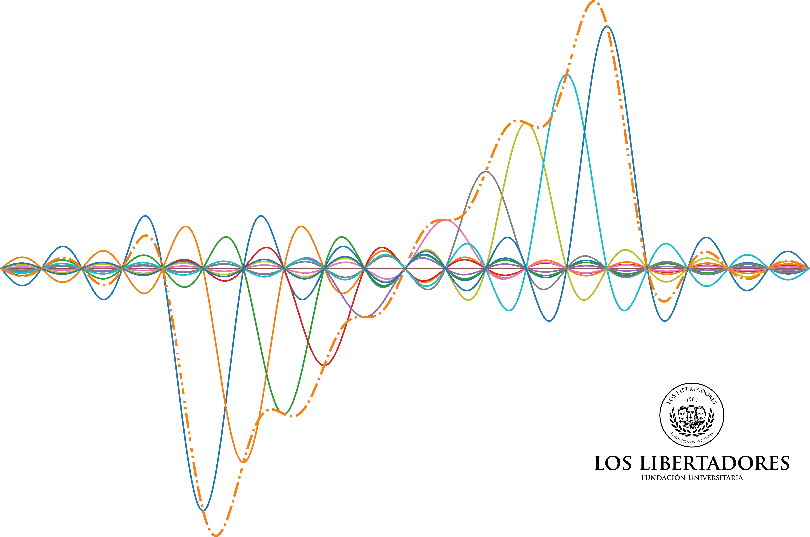

IE0274200/IE0370200 - Digital Signal Processing 1 ~ 2020-2
Objectives
The main purpose of this course, is to intoduce you into the discrete-time linear and time invariant systems analysis techniques.
You will learn about impulse response and convolution sum as way of determining the output of a LTI system. Also you will use
Z-transforms techiques (the discrete-time equivalent of Laplace transformation) for analyzing those systems.
Finally you will learn about frequency domain ...
Contents
- Review of signals and systems
- Sampling Theorem (Part I)
- Impulse response and Dicrete-time convolution
- Z-Transform and LTI Systems
- Dicrete-Time Fourier Transform (DTFT)
- Discrete-Fourier Transform (DFT) and Computationally Efficient Implementation Algorithms (FFT)
- Design of FIR Filters
- Design of IIR Filters
Some resources
- Lecture notes
- Code examples (in python)